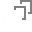

The Move Tool allows you to select objects on your page. Once selected, the Move Tool allows you to move, rotate, and resize your selected object, as well as change its properties.
Settings
The following settings are available on the context toolbar when no objects are selected:
Document Setup—displays a pop-up panel for adjusting document settings.
Preferences—provides access to the Preferences dialog for advanced application settings.
The following settings are available on the context toolbar when individual objects are selected (other settings are shown conditional on the type of object selected):
Fill—click the color swatch to display a pop-up panel to update fill color.
Stroke—click the color swatch to display a pop-up panel to update stroke color.
Stroke properties—set the stroke style, width, joins, cap ends, order and arrowhead settings via a pop-up panel.
Line style—click to display a pop-up panel to set the Width and line style.
Lock Children—when checked, any child object(s) of a selected ungrouped object cannot be altered when the selected object is transformed. Great for maintaining the size, position and aspect ratio of a clipped picture when resizing its parent object.
Enable Transform Origin—displays a movable transform origin about which the object can be rotated.
Hide Selection while Dragging—when selected, the object's selection box is temporarily hidden when transforming the object. If this option is off, the selection box remains visible during transformation. The selected behavior persists across all objects unless it is manually switched.
Show Alignment Handles—when selected, displays alignment handles at the center and edges of the selected object. Hovering over these handles displays a floating guideline across the page. You can drag the handles to position the center or edges of the selected object in line with this guide.
 Transform Objects Separately—when selected, where multiple objects are selected, they can be be resized, rotated and sheared independently of each other instead of transforming the bounding box.
Cycle Selection Box—after reshaping, rotating, or shearing the object, this option toggles the selection box between a Base box (honors the transform), Regular bounds (ignores transform) or Planar bounds (fitting to an isometric grid if active).
Convert to Curves—converts the selected object into a series of connected lines and nodes.
Align Horizontal—align objects according to Left or Right edges, or by Center. Single objects align in relation to page edge.
Align Vertical—align objects according to Top or Bottom edges, or by Middle. Single objects align in relation to page edge.
Group—converts selected objects into a group for easier selection and modification.*
Ungroup—splits selected group into individual objects for focused manipulation.*
The following settings are available on the context toolbar when a placed image or document is selected:
Image/document information—Displays the image's or document's native dimensions and its placed DPI and percentage scaling; use the drop-down arrow to edit DPI or scaling, or reset to original size (100% scaling).
PageBox—choose from the following:
TrimBox—the page displayed to the page edge.
BleedBox—the page with bleed or printer marks shown.
Minimum Content—the bounding box of the object(s) in the document.
Minimum Visible Content—As for Minimum Content but the bounds of any hidden objects are also taken into account.
Maximum Content—the bounding box of the object(s) including the object's control handles outside the box.
Maximum Visible Content—As for Maximum Content but the bounds of any hidden objects are also taken into account.
Artboard—select an artboard to display (Designer document).
Spread—select a spread to display (PDF or Publisher document).
Edit Image/Edit Document—click to open a separate window from which you can edit your placed (or framed) image or document.
Replace Image/Replace Document—click to display a pop-up panel from which you can select a file to replace the current placed (or framed) image or document.
 Move Tool
Move Tool